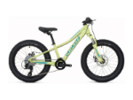

Cannondale Trail 7
$649.99 - $699.99
- Specifcaitons
- Frame: New Trail, SmartForm C2 Alloy, SAVE, BOOST spacing, Tapered Headtube, Flat Mount Rear Brake, Internal Cable Routing.
- Fork: SR Suntour XCM-HLO-DS, 100mm, 1-1/8", coil spring
- Headset: Sealed Semi Integrated, 1-1/8 reducer
- Rims/Wheels: Cannondale DC 5.0, double wall, 32-hole
- Hubs: Formula DC1420 front, Custom BOOST QR Formula rear
- Spokes: Stainless Steel, 14g
- Tires: WTB Ranger Comp 27.5/29x2.25" DNA Compound
- Crankset: FSA Alpha Drive forged
- Chainrings: 22/36
- Bottom Bracket: Tange LN 3912, square taper
- Chain: Shimano HG53 9-speed
- Front Derailleur: MicroShift Direct Mount
- Rear Derailleur: Shimano Altus 9-speed
- Cassette/Rear Cogs: SunRace 11-36 9-speed
- Shifters: Shimano EZ Fire 505, 2x9-speed
- Handlebars: Cannondale C4, 6061 Alloy, 20mm rise, 680mm
- Tape/Grips: Cannondale Dual-Density
- Stem: Cannondale C4, 6061 Alloy, 31.8, 7°
- Brake Levers: Shimano M315 hydro disc
- Brakes: Shimano M315 hydro disc, 160/160mm
- Pedals: Cannondale Platform
- Saddle: Cannondale Stage 3
- Seat Post: Cannondale C4, 6061 alloy, 31.6x350mm
Catalyst 3
$479.99
- Specifications
- Frame: Catalyst, SmartForm C3 Alloy, 1-1/8” head tube, rack and fender mounts, 27.5"
- Fork: SR Suntour M3030-27, 75mm, coil spring with preload, 1-1/8", 27.5"
- Headset: Semi-integrated, threadless, 1-1/8"
- Rims/Wheels: DC 6.0, double wall, 32-hole
- Hubs: Alloy Disc, Cassette, sealed, loose ball bearings, QR, 32h
- Spokes: Stainless, 14g
- Tires: Innova 27.5"x2.1"
- Crankset: Prowheel
- Chainrings: 24/34/42
- Bottom Bracket: Cartridge type, square taper, BSA, Sealed bearing
- Chain: KMC Z51, 8-speed
- Front Derailleur: Shimano Tourney, 31.8 clamp
- Rear Derailleur: Shimano Tourney, 8-speed
- Cassette/Rear Cogs: Sunrace M66, 11-34, 8-speed
- Shifters: Shimano Tourney Easyfire Plus, 3x8-speed
- Handlebars: Alloy, 25mm rise, 700mm, 31.8
- Tape/Grips: Cannondale Dual-Density
- Stem: Alloy, 31.8, 8°
- Brake Levers: Shimano Tourney
- Brakes: Tektro M280 Cable actuated disc, 160/160mm
- Pedals: Cannondale Platform
- Saddle: Cannondale Stage 2
- Seat Post: Alloy, micro-adjust, 27.2x350mm
Riprock 20

$449.99
- Specifications
- Frame: Specialized A1 Premium Aluminum, single butted, ZeroStack head tube, 135mm rear hub spacing, forged dropouts, replaceable derailleur hanger
- Fork: Custom SR Suntour XCT, coil spring, 60mm travel, preload adjust, 1-1/8" steerer
- Rims/Wheels: Alex, 20", alloy double-wall, pin joint, disc specific, 28h
- Hubs: See rims/wheels
- Tires: Specialized Big Roller, 60TPI, wire bead, 20x2.8"
- Crankset: Forged alloy, 127mm
- Chainrings: 30T
- Rear Derailleur: Shimano Tourney TX
- Rear Cogs: Sunrace, 7-speed, 11-34t
- Shifters: Shimano Revo-Shift, 7-speed
- Handlebars: Specialized, flat bar, double-butted 6061 alloy, 5-degree backsweep, 580mm, 25.4mm
- Tape/Grips: Specialized, Kraton, Revo type
- Stem: Specialized, 3D forged alloy, 4-bolt, 6-degree rise, 60mm
- Brake Levers: Tektro
- Brakes: Tektro Aries, mechanical disc
- Pedals: Platform
- Saddle: Specialized Kids, 7mm rails, w/ bumper
- Seat Post: Alloy, single bolt, 27.2mm